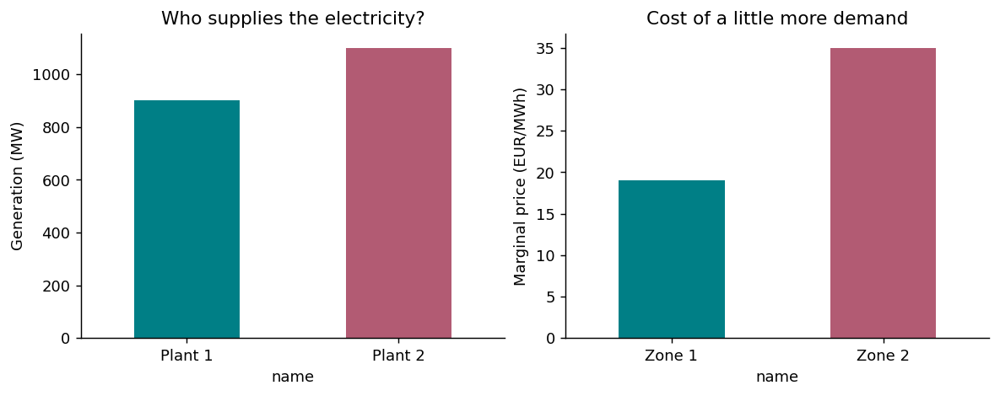
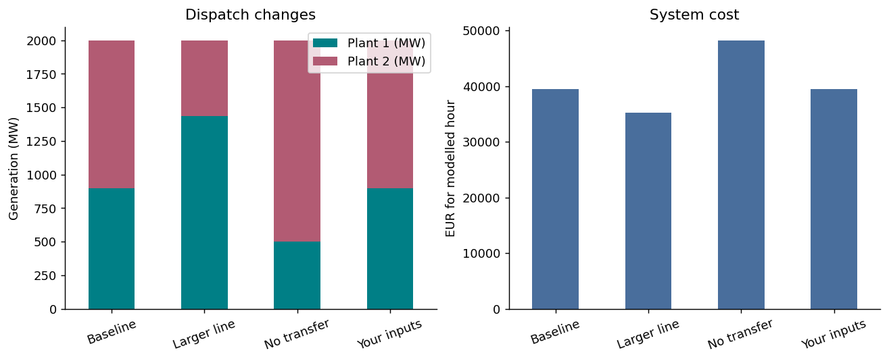

Electricity markets: generation, transfers, and prices#
PyPSA lets us describe an energy system and find an operation that minimises its specified costs. This original teaching notebook follows the two-zone question in Quickstart 1, then adds controlled experiments.
Your task#
Run the cells in order. Predict the effect of a larger transmission connection before solving it. Explain each figure in a Markdown cell. Select Python (pypsa-course).
Learning objectives#
Connect buses, generators, loads, and a line.
Distinguish capacity (MW), energy (MWh), and cost (EUR).
Explain congestion and interpret conditional marginal prices.
Change one assumption and compare results against a saved baseline.
The two zones are abstract examples, not Groningen grid areas. We model one hour with fixed demand, continuous generation, no losses, and linearised power flow. Investment, reserve requirements, start-up costs, and emissions are outside this example.
import numpy as np
import pandas as pd
import matplotlib.pyplot as plt
import pypsa
from IPython.display import display
print("PyPSA:", pypsa.__version__)
plt.rcParams.update({"figure.dpi": 110, "axes.spines.top": False,
"axes.spines.right": False})
PyPSA: 1.4.0
Describe the system#
A Bus is a balance point. A Load withdraws power; a Generator supplies it. A Line exchanges power between buses.
Input |
Zone 1 |
Zone 2 |
|---|---|---|
Demand (MW) |
500 |
1,500 |
Generator capacity (MW) |
2,000 |
2,000 |
Linear cost coefficient (EUR/MWh) |
10 |
13 |
Quadratic coefficient (EUR/(MW² h)) |
0.005 |
0.010 |
For generator output \(g\) in MW, \(a g+b g^2\) is an operating cost rate in EUR/h. Multiply by one hour to obtain EUR. The marginal cost of an extra MWh over this hour is \(a+2bg\), not just \(a\). Thus the generator in Zone 1 need not always meet all demand first.
The starting line limit is 400 MW. Positive flow goes from Zone 1 to Zone 2. These starting inputs match the linked reference problem; the scenario exercises and explanations below are developed for this course.
# Edit this cell for your own experiment; keep the saved baseline below.
settings = {"line_limit_mw": 400.0, "demand_multiplier": 1.0,
"zone2_linear_cost": 13.0}
display(pd.Series(settings, name="Input"))
line_limit_mw 400.0
demand_multiplier 1.0
zone2_linear_cost 13.0
Name: Input, dtype: float64
Build a fresh network#
The function below creates a new system for each experiment. This prevents an old result or an earlier edit from silently carrying into the next scenario. p_nom fixes generation capacity; s_nom fixes the line rating. The reactance x allows PyPSA to calculate the linearised flow relationship. We explicitly choose one-hour snapshot weights.
def build_market(line_limit_mw=400.0, demand_multiplier=1.0,
zone2_linear_cost=13.0):
if line_limit_mw < 0 or demand_multiplier <= 0:
raise ValueError("Use a non-negative line limit and positive demand.")
n = pypsa.Network()
n.set_snapshots(pd.date_range("2025-01-01", periods=1, freq="h"))
n.snapshot_weightings.loc[:, :] = 1.0
n.add("Carrier", "AC")
for zone in ["Zone 1", "Zone 2"]:
n.add("Bus", zone, carrier="AC", v_nom=110)
for zone, demand in [("Zone 1", 500), ("Zone 2", 1500)]:
n.add("Load", f"Demand {zone}", bus=zone,
p_set=demand * demand_multiplier)
n.add("Generator", "Plant 1", bus="Zone 1", carrier="AC", p_nom=2000,
marginal_cost=10, marginal_cost_quadratic=0.005)
n.add("Generator", "Plant 2", bus="Zone 2", carrier="AC", p_nom=2000,
marginal_cost=zone2_linear_cost, marginal_cost_quadratic=0.010)
n.add("Line", "Connection", bus0="Zone 1", bus1="Zone 2",
x=0.01, r=0, s_nom=line_limit_mw)
return n
n = build_market(**settings)
display(n.generators[["bus", "p_nom", "marginal_cost",
"marginal_cost_quadratic"]])
/root/.local/lib/python3.12/site-packages/pypsa/network/io.py:2079: FutureWarning: pandas infers the `str` dtype for string data since its version 3.0. PyPSA still converts it back to numpy object dtype on import, but will keep it from PyPSA 2.0 on. Set `pypsa.options.api.legacy_string_dtype` explicitly to suppress this warning.
new_static = _coerce_string_dtypes(new_static)
| bus | p_nom | marginal_cost | marginal_cost_quadratic | |
|---|---|---|---|---|
| name | ||||
| Plant 1 | Zone 1 | 2000.0 | 10.0 | 0.005 |
| Plant 2 | Zone 2 | 2000.0 | 13.0 | 0.010 |
Solve and check#
A solver selects generation and flow while respecting demand balances and limits. HiGHS is an open-source optimisation solver. io_api="direct" passes the model through its Python interface. We check the termination condition before interpreting a result.
def solve(n):
status, condition = n.optimize(solver_name="highs", io_api="direct",
log_to_console=False,
include_objective_constant=False)
if status != "ok" or condition != "optimal":
raise RuntimeError(f"No optimal solution: {status}, {condition}")
return n
n = solve(n)
t = n.snapshots[0]
generation = n.generators_t.p.loc[t]
prices = n.buses_t.marginal_price.loc[t]
flow = n.lines_t.p0.at[t, "Connection"]
display(generation.rename("Output (MW)").to_frame())
display(prices.rename("Marginal price (EUR/MWh)").to_frame())
print(f"Zone 1 → Zone 2: {flow:.2f} MW")
print(f"System operating cost for the hour: EUR {n.objective:,.2f}")
assert np.isclose(generation.sum(), n.loads_t.p.loc[t].sum(), atol=1e-3)
assert abs(flow) <= settings["line_limit_mw"] + 1e-3
| Output (MW) | |
|---|---|
| name | |
| Plant 1 | 900.0 |
| Plant 2 | 1100.0 |
| Marginal price (EUR/MWh) | |
|---|---|
| name | |
| Zone 1 | 19.00009 |
| Zone 2 | 35.00011 |
Zone 1 → Zone 2: 400.00 MW
System operating cost for the hour: EUR 39,450.00
Read the first result#
Generation must cover 2,000 MW in total. When the 400 MW line binds, Zone 2 still needs substantial local generation. A bus marginal price measures the modelled cost of a small extra MWh at that bus under the current assumptions. It is a shadow value, not a retail tariff or a plant’s average production cost.
For this lossless two-zone case, congestion rent for the one-hour interval is flow × (receiving price − sending price) × one hour. This is not profit after transmission investment costs.
rent_eur = flow * (prices["Zone 2"] - prices["Zone 1"]) * 1.0
print(f"Congestion rent in this hour: EUR {rent_eur:,.2f}")
fig, axes = plt.subplots(1, 2, figsize=(9, 3.5), layout="constrained")
generation.plot.bar(ax=axes[0], color=["#007f86", "#b25b73"], rot=0)
axes[0].set(ylabel="Generation (MW)", title="Who supplies the electricity?")
prices.plot.bar(ax=axes[1], color=["#007f86", "#b25b73"], rot=0)
axes[1].set(ylabel="Marginal price (EUR/MWh)", title="Cost of a little more demand")
plt.show()
Congestion rent in this hour: EUR 6,400.01

Predict, change, compare#
Predict what a larger connection will do to generation, cost, and the price difference. Then compare three line ratings. Everything else stays fixed. The third case uses your editable settings, so a changed demand or cost remains visible in the table.
A non-binding line need not be full: a larger rating permits a transfer; it does not force one.
cases = {
"Baseline": dict(line_limit_mw=400.0, demand_multiplier=1.0, zone2_linear_cost=13.0),
"Larger line": dict(line_limit_mw=1000.0, demand_multiplier=1.0, zone2_linear_cost=13.0),
"No transfer": dict(line_limit_mw=0.0, demand_multiplier=1.0, zone2_linear_cost=13.0),
"Your inputs": settings.copy(),
}
networks = {name: solve(build_market(**inputs)) for name, inputs in cases.items()}
rows = []
for name, net in networks.items():
price = net.buses_t.marginal_price.iloc[0]
rows.append({"scenario": name, **cases[name],
"Plant 1 (MW)": net.generators_t.p.iloc[0]["Plant 1"],
"Plant 2 (MW)": net.generators_t.p.iloc[0]["Plant 2"],
"Transfer (MW)": net.lines_t.p0.iloc[0]["Connection"],
"Price gap (EUR/MWh)": price["Zone 2"] - price["Zone 1"],
"Cost (EUR for hour)": net.objective})
comparison = pd.DataFrame(rows).set_index("scenario")
display(comparison.round(2))
fig, axes = plt.subplots(1, 2, figsize=(10, 4), layout="constrained")
comparison[["Plant 1 (MW)", "Plant 2 (MW)"]].plot.bar(
stacked=True, ax=axes[0], color=["#007f86", "#b25b73"], rot=20)
axes[0].set(ylabel="Generation (MW)", xlabel="", title="Dispatch changes")
comparison["Cost (EUR for hour)"].plot.bar(ax=axes[1], color="#496e9c", rot=20)
axes[1].set(ylabel="EUR for modelled hour", xlabel="", title="System cost")
plt.show()
assert comparison.loc["Larger line", "Cost (EUR for hour)"] <= comparison.loc["Baseline", "Cost (EUR for hour)"] + 1e-3
| line_limit_mw | demand_multiplier | zone2_linear_cost | Plant 1 (MW) | Plant 2 (MW) | Transfer (MW) | Price gap (EUR/MWh) | Cost (EUR for hour) | |
|---|---|---|---|---|---|---|---|---|
| scenario | ||||||||
| Baseline | 400.0 | 1.0 | 13.0 | 900.00 | 1100.00 | 400.00 | 16.0 | 39450.00 |
| Larger line | 1000.0 | 1.0 | 13.0 | 1433.33 | 566.67 | 933.33 | 0.0 | 35183.33 |
| No transfer | 0.0 | 1.0 | 13.0 | 500.00 | 1500.00 | 0.00 | 28.0 | 48250.00 |
| Your inputs | 400.0 | 1.0 | 13.0 | 900.00 | 1100.00 | 400.00 | 16.0 | 39450.00 |

A second experiment: higher local generation cost#
Change only zone2_linear_cost from 13 to 20 in settings, then rerun from the input cell. Keep demand and the line limit at baseline values. Does congestion limit how much the other zone can help? Explain the difference between a change in operating cost and a change in installed capacity.
Optional practice#
Set
demand_multiplierto 1.1, keeping all other settings fixed. Predict whether the line remains congested.Compute each bus balance independently, using generation, local demand, and signed line flow.
Explain why reinforcing the line can reduce operating cost here, while deciding whether to build it also requires an investment cost.
Check your work#
With the starting inputs, expect approximately 900 MW from Plant 1, 1,100 MW from Plant 2, 400 MW transferred, and marginal prices close to 19 and 35 EUR/MWh. The objective is 39,450 EUR for one hour. Small solver tolerances can affect the final decimals. A line rated at 1,000 MW allows an uncongested transfer of about 933.33 MW and an almost zero price gap.
Sources and reuse#
The initial problem is credited to PyPSA Quickstart 1. The baseline/experiment comparison approach is informed by the supplied Jansen scenario-analysis lesson. This is a small classroom model, not a rerun of its South African networks. Code in this notebook is supplied under AGPL-3.0-or-later; retain attribution. See sources and attribution in the teaching package.